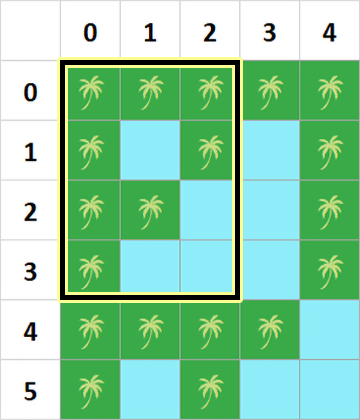
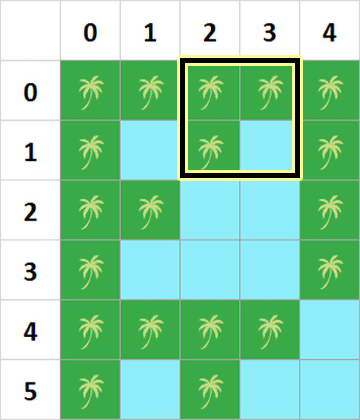
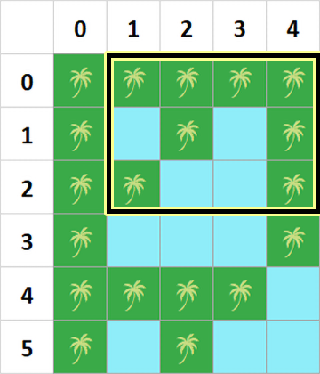
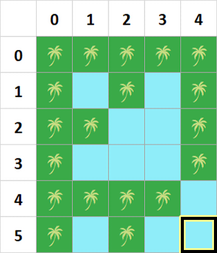

Billion Islands for $N = 11$ dan $M = 11$, where cells containing tree are cells that are lands.
Billion Islands is known for its beautiful lands and seas. The Billion Islands can be represented as a matrix with $N$ rows, numbered from $0$ to $N - 1$, and $M$ columns, numbered from $0$ to $M - 1$.
For a cell at row $i$ and column $j$, if the bitwise AND of $i$ and $j$ is $0$, then that cell is a land. Otherwise, if their bitwise AND is not $0$, then that cell is a sea.
Billion Islands for $N = 11$ dan $M = 11$, where cells containing tree are cells that are lands.
Pak Dengklek has $Q$ itineraries. The $i$-th itinerary can be represented as four integers $A_i$, $B_i$, $C_i$, and $D_i$.
On the $i$-th itinerary, Pak Dengklek wants to visit all lands from rows $A_i$ to $C_i$ and columns $B_i$ to $D_i$. Moreover, Pak Dengklek does not want to visit any land other than the planned ones.
Pak Dengklek is very athletic, such that he can move from one land to any other land in one jump. However, to move from one land to other land which shares a side (with one of the four cardinal directions), Pak Dengklek does not have to jump. Of course, Pak Dengklek must not be on a sea at any time because seas are dangerous.
In the beginning of each trip, Pak Dengklek will be on a beach which is outside the matrix. Therefore, he must jump to one of the lands first. For every itinerary, determine the minimum number of jumps that must be done by Pak Dengklek!
The input is given with the following format:
N M Q A1 B1 C1 D1 A2 B2 C2 D2 ⋮ AQ BQ CQ DQ
Output $Q$ lines. The $i$-th line contains the minimum number of jumps for the $i$-th itinerary.
6 5 4 0 0 3 2 0 2 1 3 0 1 2 4 5 4 5 4
1 1 2 0
Following are the illustrations of all Pak Dengklek's itineraries.
   
On the third itinerary, Pak Dengklek can perform the followings.
Pak Dengklek uses $2$ jumps for this itinerary.